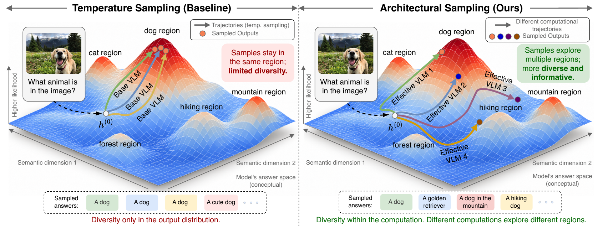
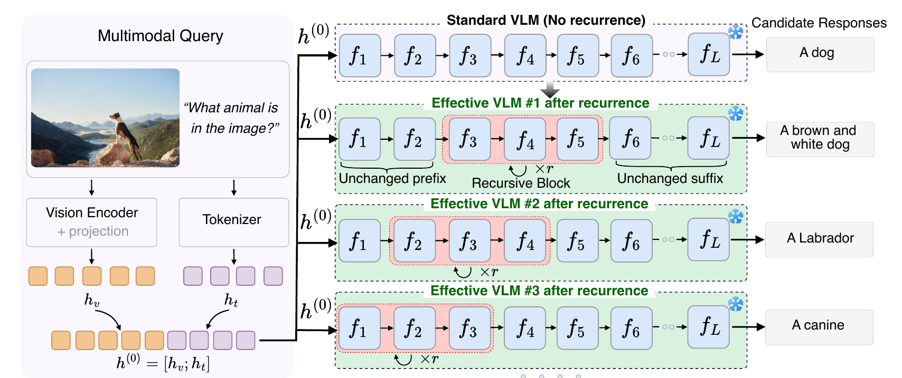
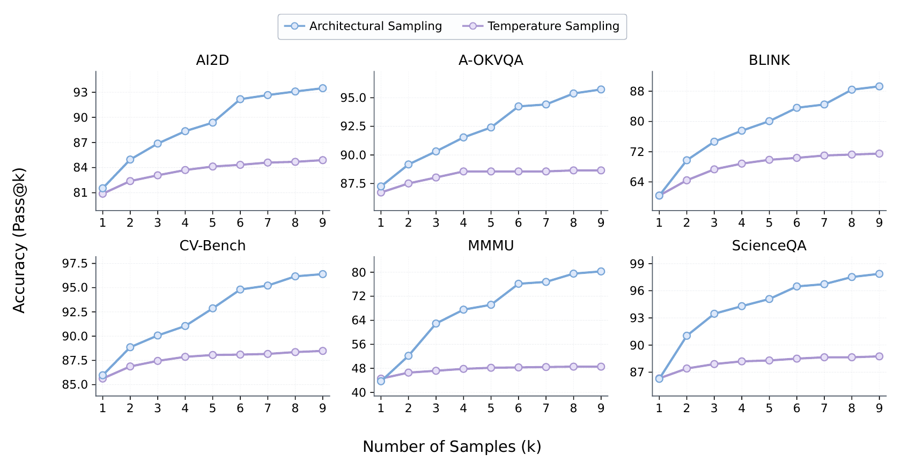
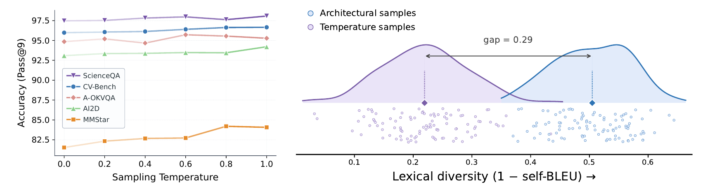
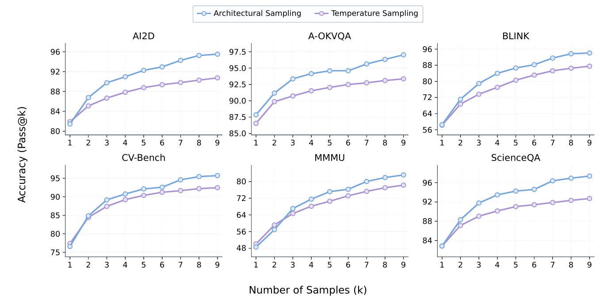
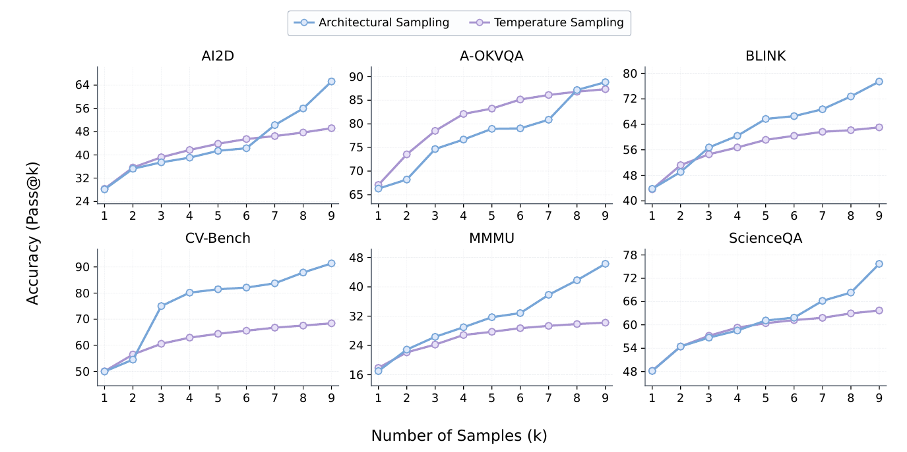

Abstract
Test-time scaling often seeks better answers by sampling multiple responses from a frozen model, yet conventional temperature sampling generates every candidate along the same fixed computation path.
We introduce architectural sampling, a training-free method that generates candidates through distinct forward computations by reusing selected blocks of decoder layers. Varying the block location and repetition count introduces computational diversity without updating model weights or adding auxiliary parameters. Across five Qwen checkpoints and twelve multimodal benchmarks, architectural sampling improves pass@9 over standard-path temperature sampling by 6.58 percentage points on average at the same nine-candidate budget. Reusing early layers yields the strongest gains, and the improvement in candidate coverage persists even under greedy decoding. The resulting candidates show lower lexical overlap and improve accuracy when used as rollouts for label-free test-time reinforcement learning.

How it works
Temperature only acts at the very last step: every candidate passes through the same layers with the same intermediate representations, and only the final draw differs. Architectural sampling moves the source of diversity upstream, into the computation.
For each candidate we pick a short contiguous window of decoder layers \(B_{[a:b]} = f_b \circ \cdots \circ f_a\), apply it \(r\) times, then resume the original forward pass. The prefix and suffix stay untouched:
Setting \(r = 1\) recovers the standard forward pass exactly. The weights stay frozen, nothing is trained, and each path can still be decoded greedily or with temperature, so architectural and token-level variation combine.

Results
At an equal budget of nine candidates and the same decoding temperature (\(T = 0.6\)), architectural sampling raises pass@9 by 6.58 points on average and wins in 55 of 60 checkpoint–benchmark pairs. Choose a model to compare the two candidate pools.

What makes it work
Early layers matter most
Every window placement beats temperature sampling, but gains shrink as the window moves deeper. Early windows score highest on all five ablation benchmarks.
Reprocess both modalities
Updating visual and language tokens together works best. Language-only updates keep most of the gain; visual-only updates keep less.
It works even with greedy decoding
At \(T = 0\), repeated calls to the standard model return the same answer. Architectural candidates stay diverse, and pass@9 is stable across temperatures.
Answers overlap less
Mean lexical diversity (1 − Self-BLEU) is 0.51 for architectural candidates versus 0.22 for temperature samples. It also beats beam search, top-k and top-p at the same budget.

Better rollouts for test-time learning
We swap the temperature-sampled rollouts in TTRV, a label-free GRPO-based test-time RL method, for architectural candidates. No ground-truth labels are used; rewards come from majority vote over the model's own outputs. Accuracy improves on every benchmark for both backbones.
| pass@1 after TTRV | CV-Bench | MMStar | AI2D | A-OKVQA | ScienceQA | CountBench |
|---|---|---|---|---|---|---|
| Qwen3.5-VL-2B | ||||||
| Temperature rollouts | 74.60 | 45.52 | 75.38 | 68.04 | 67.01 | 93.06 |
| Architectural rollouts | 80.29+5.69 | 49.17+3.66 | 76.94+1.56 | 83.38+15.34 | 77.33+10.32 | 95.10+2.04 |
| Qwen3-VL-8B | ||||||
| Temperature rollouts | 86.17 | 53.93 | 76.61 | 87.40 | 84.75 | 93.17 |
| Architectural rollouts | 86.29+0.11 | 55.52+1.59 | 77.80+1.17 | 87.95+0.55 | 88.82+4.07 | 96.93+3.76 |
More scaling curves
The same trend holds on other checkpoints, though not uniformly across every panel.


Limitations
Reusing layers adds forward cost: the nine architectural candidates take about 10.5 standard decoder traversals versus 9.0 for temperature sampling (53.8 s vs. 46.1 s on Qwen3-VL-8B). The method also needs access to internal decoder layers, so it cannot be used with closed models served only through an API.
Citation
@inproceedings{singh2027architectural,
title = {Architectural Sampling: Test-Time Scaling via Computational
Diversity in Frozen Vision-Language Models},
author = {Singh, Akshit and Marjit, Shyam and Lin, Wei and
Karlinsky, Leonid and Mirza, M. Jehanzeb},
booktitle = {Under review},
year = {2027}
}